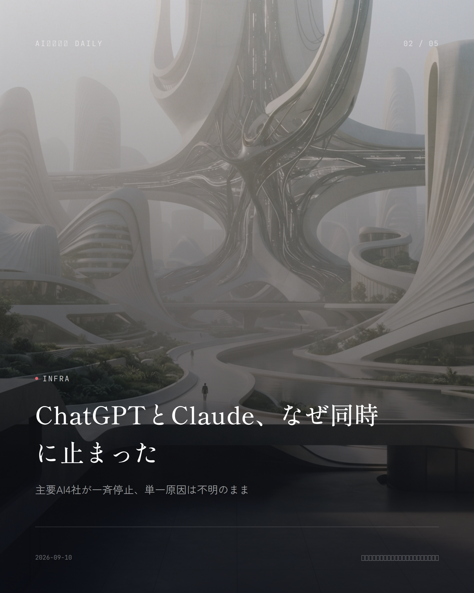
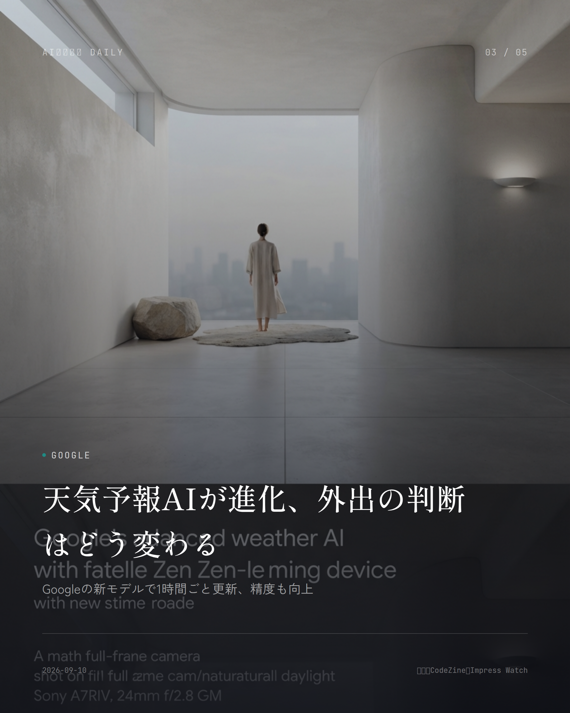
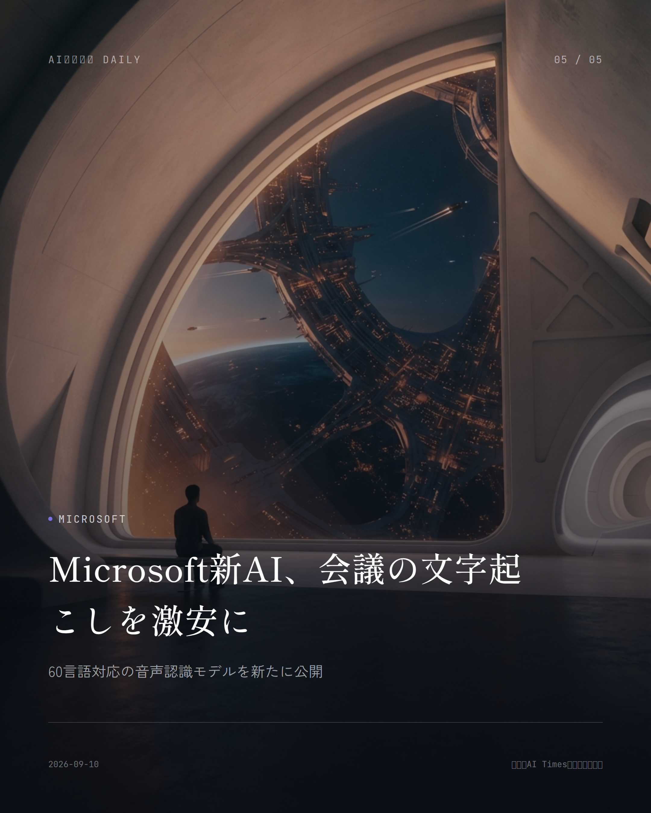

これは2026-09-10時点のアーカイブページです。最新のニュースはこちら
本サイトはアフィリエイトプログラムによる収益を得ている場合があります。
本サイトはGoogle AdSense等の広告配信サービスを利用しています。
目次
OpenAI
約2分で読める
90年間解けなかった難問、AIが解決と発表
数学の7大難問の一つ、OpenAIの新モデルが証明
OpenAIが現地時間9月8日、とんでもない発表をした。数学の未解決問題「ミレニアム懸賞問題」の一つ、社内の未公開モデルが「ナビエ・ストークス方程式の存在と滑らかさ」を解決する証明を作り出したというのだ。流体の運動を記述するこの方程式は航空機の設計や天気予報の土台にもなっている基礎理論で、90年近くも誰も手をつけられなかった代物だ。
証明を担当したのは「GPT-6 Astraよりずっと高性能」とされる社内の未公開モデル。きっかけは9月1日、「2つのミレニアム懸賞問題が解決されたらしい」といううわさを耳にしたことだったという。そこから約1万個のエージェントを一斉に走らせ、約88時間後の5日に結論へたどり着いた。突破口になったのは粘性項を除いた「オイラー方程式」で、約100のエージェントが約50時間かけて、外力がなくても解が滑らかさを失いうることを突き止めたそうだ。
ただ、この発表には数学者から疑問の声も上がっている。当初は「人間の入力はほとんどない」という触れ込みだったが、実際には通話の中でチームが取り組んでいたこと、プロンプト自体もCodexに書かせていたこと、膨大な計算資源が投じられていたことが明らかになった。経緯の説明が正確だったのか、そこが問われている。ミレニアム懸賞問題が解決された例はこれまでポアンカレ予想のみ。独立した検証はこれからだ。
なぜ重要か ミレニアム懸賞問題は世界に7つしかなく、人類が90年解けなかった数学の壁にAIが挑んだこと自体、意義は大きい。ただ人間の関与や説明の正確さを巡って数学者から疑問が出ているのも事実で、AIの実力を測る試金石になりそうだ。
出典：ITmedia NEWS、CNET Japan（2026年9月8〜9日）

Infra
約2分で読める
ChatGPTとClaude、なぜ同時に止まった
主要AI4社が一斉停止、単一原因は不明のまま
2026年9月3日、OpenAIのChatGPT、AnthropicのClaude、SpaceXAIのGrok、GoogleのGeminiといった主要な生成AIサービスが軒並み大規模な障害に見舞われた。各社の公式ステータスページで問題が認められ、DownDetectorにはChatGPTだけで数万件もの報告が押し寄せた。仕事や調べ物で日常的にAIを使っている人にとっては、ある日突然つながらなくなるという体験になった。
厄介なのは、各社の説明がバラバラだったことだ。日本時間で言うと9月3日深夜から4日未明にかけて、ChatGPT、Claude、Grokがほぼ同時に落ち、世界中で「主要な対話AIが一斉にダウンした」と大騒ぎになった。Grok側は自社データセンターの障害がAnthropicのクラウド容量にも波及したと説明する一方、ChatGPTは別のルーティング障害だったとしている。結局、3社に共通する単一の原因は公式には特定されないままだ。
各社とも同日中に順次復旧を発表したものの、複数の主要AIサービスが同時に止まったという事実そのものが、業務をAIに任せきることのリスクを改めて突きつけた形だ。
なぜ重要か 普段仕事や生活でChatGPTやClaudeに頼っている人ほど、突然使えなくなった時の影響は大きい。裏側のクラウド基盤を一部共有するAI各社が一斉に止まったことは、AI依存のリスクを浮き彫りにした。
出典：各社公式ステータス、国内メディア報道（2026年9月3〜4日）

Google
約2分で読める
天気予報AIが進化、外出の判断はどう変わる
Googleの新モデルで1時間ごと更新、精度も向上
Google DeepMindとGoogle Researchが9月3日（現地時間）、グローバル気象予測AIモデル「WeatherNext 3」を発表した。リアルタイムの衛星データを逐次取り込むことで、これまでの物理シミュレーション中心の手法より正確で高解像度な予報を実現するという。
一番の特徴は毎時更新の高解像度予報だ。地表温度や湿度は5km、その他の地表変数は10km、風速などの大気変数は25kmという分解能で予測しており、従来モデルと比べて約5倍の空間解像度になった。降水予報についても、NASAの人工衛星データやGoogle独自の降水再解析データをAI訓練に活用し、従来比で最大60%スコアが上がったそうだ。
WeatherNext 3はすでにGoogle Search、Gemini、Google Maps、Google Maps Platform、Google Cloudといった主要サービスで使えるようになっている。多くの人が、スマホの天気表示でその違いを体感できるようになりそうだ。
なぜ重要か 毎日の天気予報は外出や洗濯、屋外イベントの計画に直結する。より高精度でこまめに更新される予報がGoogle検索やマップ、Geminiにそのまま反映されるため、多くの人がすぐに恩恵を受けられる。
出典：CodeZine、Impress Watch（2026年9月3日）
Amazon
約1分で読める
Alexa+が全米解禁、日本上陸はいつ
生成AI版アシスタント、Prime会員に無料開放
Amazonが2026年9月1日、Alexa+を米国の全ユーザーへ一般提供すると発表した。2025年から続いていた招待制のEarly Accessが終わり、米国であれば誰でも試せる段階に入った。Amazonによれば、Early Accessにはすでに数千万人が参加していたという。Prime会員なら、Alexa対応端末やAlexaアプリ、Alexa.comを通じてフル機能を無制限に使える。
生成AIで作り直されたAlexa+は、会話の文脈を保ったまま家事の段取りや予定管理をこなせるのが強みだ。ただ、日本での提供時期はまだ見えていない。2026年9月2日時点で日本はまだ対象外で、提供が始まっているのは11カ国にとどまる。アマゾンジャパンは「米国・カナダに次いで優先度が高く、かなり議論をしている」と説明している。
なぜ重要か スマートスピーカーが生成AIで会話型の秘書に進化する動きが、いよいよ米国で全面展開された。日本語対応など課題は残るが、将来的に国内の家庭にも同様の体験が来るかを占う試金石になる。
出典：海外メディア報道まとめ（2026年9月1〜2日）

Microsoft
約1分で読める
Microsoft新AI、会議の文字起こしを激安に
60言語対応の音声認識モデルを新たに公開
Microsoft AIが2026年9月3日、音声認識モデル「MAI-Transcribe-2」をMicrosoft FoundryとMAI Playgroundで公開した。60言語に対応し、話者分離や単語単位の時刻情報を基本機能として搭載。開始価格は音声1時間あたり0.10ドルと、企業の会議や顧客対応の音声を安く処理できるよう設計されている。
誰が話しているかを自動で見分ける話者分離機能や、発言のどの瞬間の言葉かが分かる単語単位のタイムスタンプが標準でついているので、議事録作成やコールセンターの通話記録分析にそのまま使いやすい。
なぜ重要か 会議の議事録作成やコールセンターの音声分析は、これまでコストが大きな壁だった。安価な文字起こしAIが普及すれば、中小企業でも会議記録の自動化や多言語対応が現実的な選択肢になる。
出典：AI Timesニュースまとめ（2026年9月3日）
NTT
NTT
約1分で読める
国内初、ロボット向けAIクラウドが始動
NTTPCが最新GPUでフィジカルAI開発を支援
NTTPCコミュニケーションズが9月2日、NVIDIA RTX PRO 6000 Blackwellを搭載したロボティクス・フィジカルAI向けGPUパブリッククラウドの提供を始めた。国内の主要GPUクラウド事業者としては初めての取り組みだという。
工場のロボット制御や自動運転など、現実世界で動く「フィジカルAI」の開発には膨大な計算資源がいる。海外の大手クラウドに頼らず国内で最新GPUを調達できる環境が整ったことで、国内メーカーの研究開発の選択肢が広がりそうだ。
なぜ重要か 工場のロボットや自動運転など「フィジカルAI」の開発には大量の計算資源が欠かせないが、海外クラウド頼みではなく国内で調達できる選択肢が増える意味は大きい。製造業のAI活用を後押しする基盤整備の一歩だ。
出典：NTTグループ ニュースリリース（2026年9月2日）
AWS
AWS
約2分で読める
AIエージェントの外部連携、安全網を追加
AWSがSlackなどとの接続を簡単・安全に
Amazon Bedrock AgentCore Identityが、AIエージェントを外部ツールやサービスに接続する際にカスタムのOAuthコールバック基盤をわざわざ作らなくて済む、管理型の同意ポータルを新たに提供し始めた。これまで開発者がAgentCore GatewayでGitHubやSalesforce、Slackなどとエージェントをつなぐには、OAuth 2.0の3者間認可フローを通すためのコールバック基盤を自前で用意・運用する必要があった。
各AgentCore Gatewayには専用のホスト型Webクライアントと認証情報プロバイダー一覧を備えた同意ポータルが割り当てられ、エンドユーザーは管理者にいちいち問い合わせなくても、自分の接続状況をセルフサービスのインターフェースでいつでも確認できるようになる。企業が社内システムとAIエージェントを安全につなぐハードルが、ここで一段下がった格好だ。
なぜ重要か AIエージェントが社内ツールを自動操作する場面が増える中、権限管理の仕組みが整うことは情報漏えいや誤操作のリスクを減らす土台になる。企業がAIエージェントを安心して業務に導入するための一歩といえる。
出典：AWS公式ブログ（2026年9月）
先頭に戻る